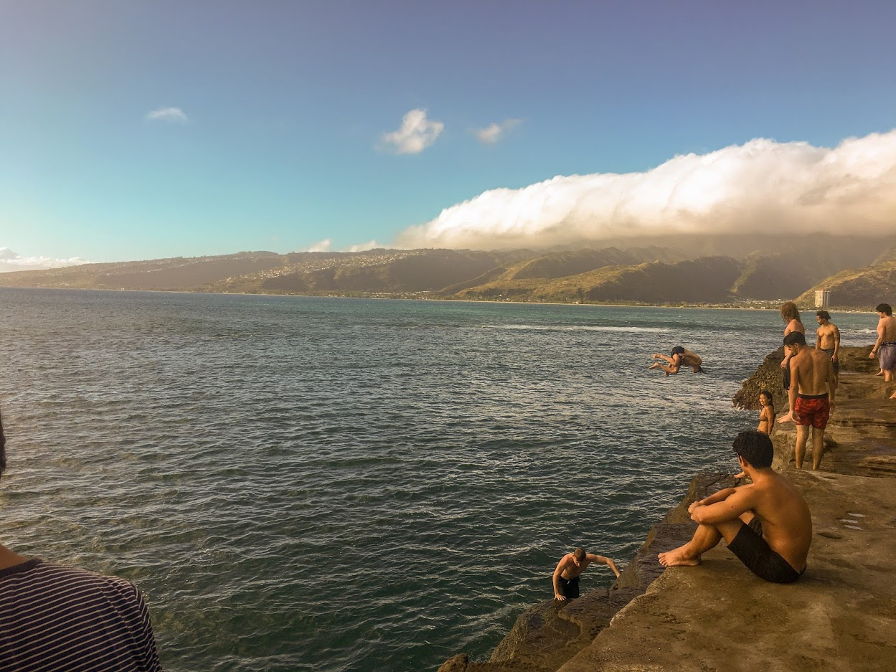

"Do a flip!"
The most adrhenaline inducing moment of a good cliff jump are the moments before you fully commit to jumping. Those agonizing times in your head when your brain is coming up with one hundred and one reasons to do anything but jump.
I'm not sure if I would label myself as an adrhenaline junkie per-say, but I am certainly not an avid cliff jumper. Some of the local boys would hurl themselves off of the cliffs surrounding us, many of them much higher than what is pictured, and land with a silky smooth splash into the warm Hawaiian water. Crazy!
Lots of people associate these types of adrhenaline fueling sports with energy drink consumption. What is your favorite kind of energy drink?